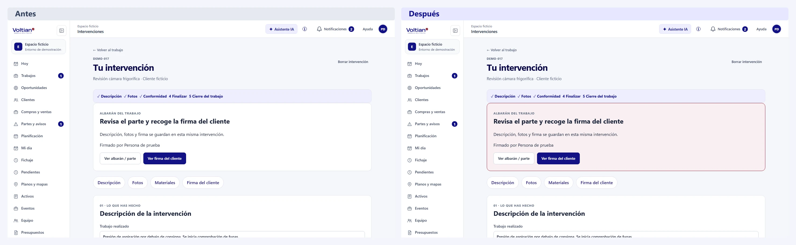
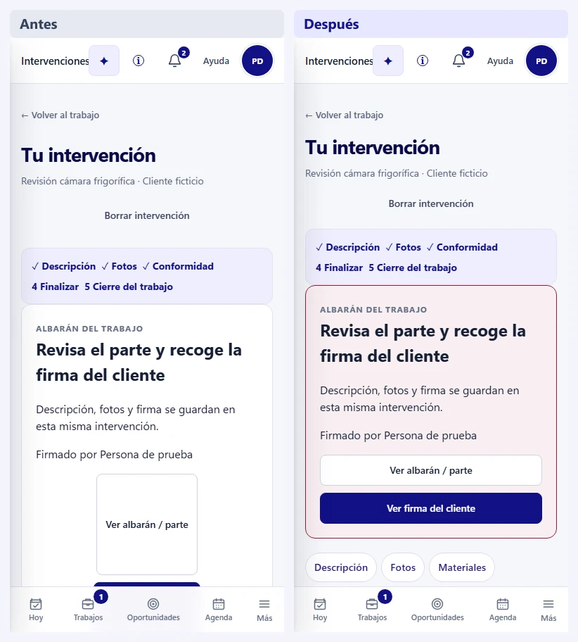

Voltian OS · Diseño de producto
Del parte al cierre, con lo importante a la vista.
Rediseñé el flujo de Trabajos de Voltian OS para que instaladoras y equipos de mantenimiento puedan identificar el estado y seguir con la intervención desde el móvil o el PC.
Por cerrar
Revisión de climatización
Centro Noria · Visita registrada
Parte recibido
Albarán y conformidad disponibles
Antes y después
La misma intervención en dos versiones de la app, con datos ficticios. En la versión publicada, el marco reúne el parte y sus acciones. En móvil, albarán y firma quedan a mano.




Estados que se leen de un vistazo
El marco, el fondo y la etiqueta textual comparten el tono del estado.
Acciones cerca del parte
El informe, la firma y el cierre se sitúan donde se toma la decisión.
Controles con espacio propio
Buscador, filtros y resultados se distinguen incluso en pantallas estrechas.
Ejemplos de código
Los ejemplos reproducen dos decisiones del caso. La demo lleva esas mismas ideas a un flujo que puedes recorrer sin cuenta.